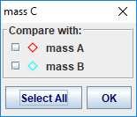
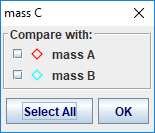
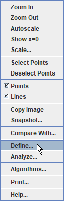
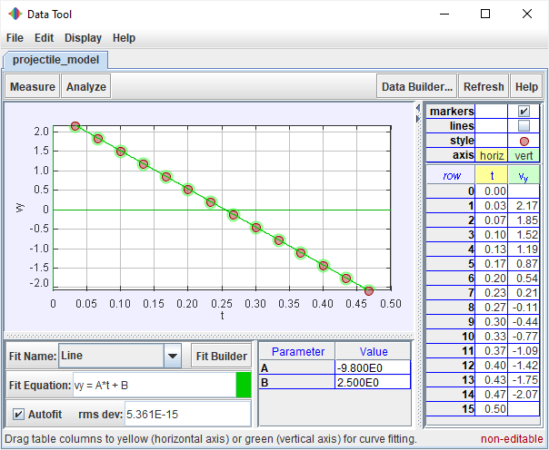

The plot view displays plots of a track's data. It has its own toolbar for selecting tracks and displaying multiple plots. The color of the plot markers is the same as that of the selected track. The data point(s) associated with the current video frame or currently selected steps are highlighted in the plot and, for single points, the coordinates are displayed in the lower left corner.
By default, plots are refreshed automatically when changes in data occur (e.g. when marking points). But when working with very long videos it can be useful to turn off auto-refresh in order to speed up the marking process. To turn off auto-refresh, click the Refresh button on the toolbar and uncheck the Auto-refresh item in the popup menu. When done marking, turn auto-refresh back on or refresh the plots manually by choosing the Refresh item in the popup menu.
Select the track of interest from the dropdown list on the plot view's toolbar.

Click the Plots button and choose the number of plots desired. Multiple plots are stacked vertically.
Check the Sync checkbox to synchronize the horizontal axes of the plots so that they all share the same variable and scale. Unchecking this box enables the horizontal variables and scales to be set independently. Vertical variables and scales are always independent.
Move the mouse over an axis label until a box appears, then click on the box and choose the desired variable from the popup list.


The plot axes autoscale by default. There are several options for setting the horizontal and/or vertical scale manually:


Right-click the plot and uncheck the appropriate box to hide the data points or connecting lines.
Right-click a plot and select one or more tracks from the Compare With dialog to add their data to the pot for direct comparison. For further analysis of multiple track data displayed in this way, open the plot data in Data Tool. The Data Tool column names for the added tracks will have subscripts to distinguish them from the track's original data.

 



Right-click a plot and choose Define... to display a Data Builder with which you can define custom variables called data functions for plots and datatables. Click the appropriate Add button to add new data functions or to define parameters for use in function expressions.



Data functions can be virtually any mathematical function of parameters, track-defined data columns, and other data functions.


Data functions created with Data Builder can be saved in XML files for manual or automatic loading. To save a function for manual loading, click the save button on the Data Builder toolbar, select the functions to save in the Save Data Functions dialog, and click the OK button. To manually load a saved data function, click the open button on the Data Builder toolbar, open the XML file with the file chooser, then select the functions to load. Note: data functions are associated with a specific track type and cannot be loaded into other track types--e.g., a function defined and saved by a Point Mass track can be loaded only by other point masses, not by vectors.


Data functions can also be loaded automatically so they are always available just like built-in data columns. To autoload a data function, first create or manually load it into Data Builder, then click the Autoload button on the Data Builder toolbar. Select the functions to autoload in the Autoload Data Functions dialog and click the OK button. The functions will then be autoloaded by all tracks of the same type. Note: data functions are associated with a specific track type and cannot be autoloaded into other track types--e.g., a function selected for autoloading by Point Mass tracks will not be autoloaded by vectors.

Right-click a plot and choose Analyze... to open its data in the Data Tool for analysis.
The Data Tool provides data analysis including automatic and manual curve fitting of all or any selected subset of the data. For help using Data Tool, open Data Tool and click its Help button.
